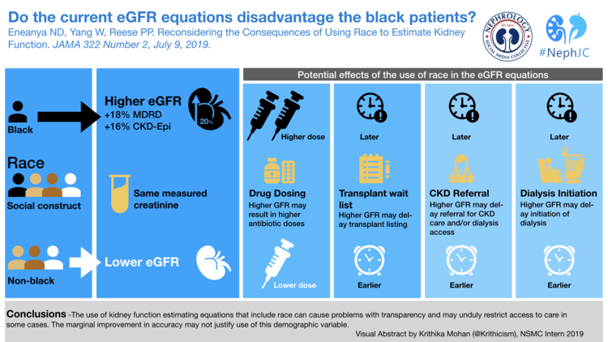

The Impact Race has on Health
White Readmission Rates for Diabetes
Black Readmission Rates for Diabetes
Other Races Readmission Rates for Diabetes
What is race?
Race is a loosely defined classification of people based on key physical characteristics and/or geographic ancestry. In the past, blatant racism was rampant in the healthcare industry as it was in every other part of US society. Much of this was based on the misconception of what race means. The main misconception centers around the idea that race is biological, meaning that it determines someone's specific genetic makeup. This lead to different people receiving different treatment based on race as it was believed that different races would react differently to certain treatments. However, studies have shown this is not the case it is not possible to determine someone's race with complete accuracy based on their DNA. There is just as much genetic diversity among people of the same race as there are among people of different races. This effectively makes race a social construct and therefore, its implications are not biological but based on society how we think about race. Although not as blatant as in the past the idea that there are distinct biological differences in people based on race still leads to many biases by healthcare workers today.

Race-Based Medicine
Race-based medicine is applied in two ways. The first is the assumption that race is genetic, therefore believing that one racial group is more likely to get a disease or have a different reaction to something solely based on their race. The second-way race based medicine is applied, is by using race as a proxy to determine other factors about an individual, such as their environment, ancestry, and social status. This is still a bad use for medicine because although one race might be more likely to have a certain factor there are still many variants of people's environment and lifestyle within the same race, so it would be much better to ask about those other factors more specifically.

An example of this is in the estimate glomerular filtration rate (eGFR). This rate is used to determine the health of someone's kidneys. This rating is therefore important when it comes to kidney transplants and other treaments. The GFR is determined based on the amount of creatine in someone's bloodstream but people with different characteristics and lifestyles will naturally have different levels of creatine too. To get around this medical professionals account for race, sex, age, and other factors into the score. Since black people on average have higher creatine levels they are automatic given a higher score than a non-hispanic white person with the same concentration of creatine. This is a clear example of using race as a bad proxy, because racial groups represent millions of people with vastly different experiences and lifestyles. Making assumptions based on the average a very large number of people is obviously going to be representive of every person in that particualr group. The danger with practices such as this is that it harms both sides as a black person that could really need the transplant is not given the priority simply for being black. As mention before a better method would be to simply ask about the lifestyle factors specifically instead of using race as the proxy since race is only a social construct, it is not an accurate determinant of an indivisuals life.
Asian Americans Highest Level of Euducation
All Americans Highest Level of Education
Racism
So far I have discussed why race is a social construct and why is a bad proxy for other information about a person's life for medical professionals. This still begs the question of why there are is such a big discrepancy between the health outcomes of people of different races? The answer boils down to racism and social policies that have impacted different groups in different ways for decades. Many of these practices include redlining, policing, education, white flight, and the prison system, which have all played a role in upholding white supremacy and forced a large number of black people to be stuck in a cycle of poverty. These poverty-stricken areas have more pollution, fewer resources, and are a more stressful environment to live in, thus all contribute to worse outcomes for people living there.
In the end, with race itself not being the reason why certain people are more likely to have a certain health outcome and with the role that racism has played in determining people's environment and access to resources, it is apparent that race does not have an impact on health instead racism does.
References
- Race and eGFR: What is the controversy? (2020, October 28). Retrieved May 13, 2021, from https://www.kidney.org/atoz/content/race-and-egfr-what-controversy
- Levels of racism: A theoretic framework and a gardener's tale. (2000). American Journal of Public Health, 90(8), 1212-1215. doi:10.2105/ajph.90.8.1212